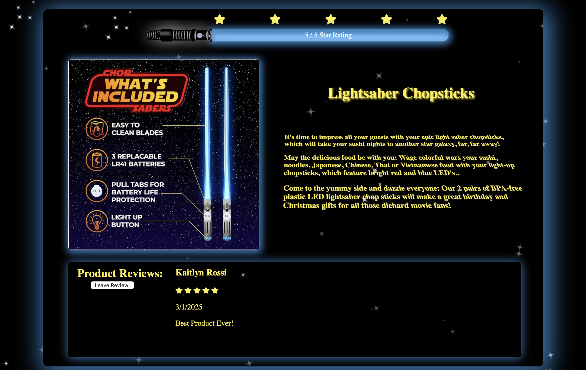

The image shown is of a product review page for a class assignment. I chose to do a page for lightsaber chopsticks because i'm a big star wars fan and I thought it would be cool to incorporate some more star wars elements into it. The project began with the progress bar idea to display the ranking, the lightsaber would light as far as the average star rating of the project.
The implemenattion was fairly simple with the help of javascript all it requrired was a simple calculation formula as ratings came in. The rest of the page developed based off the iconic movie title intro slide. The goal was to get the same effect with the product description but without the actual animation.
Although this project was simple, I chose it as an example of my work because it shows off my personal interests more and is one of my favorite things I've made.
